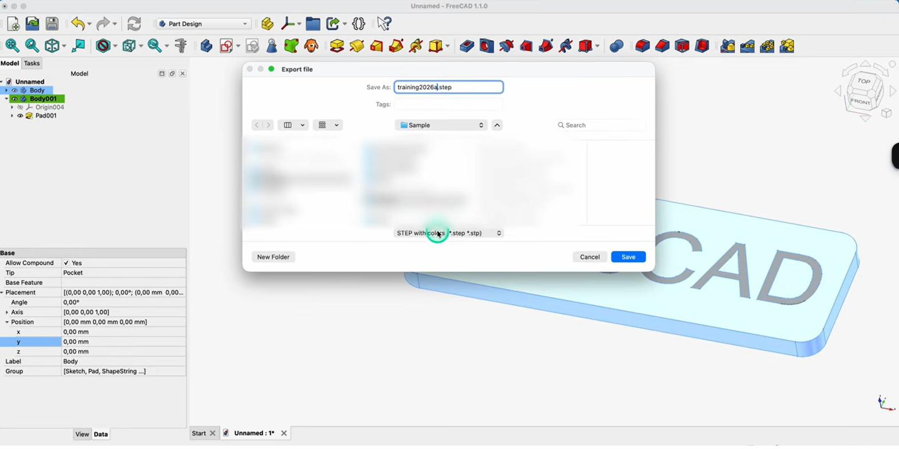

Mesh, STL & export naar de slicerMaillage, STL & exportMesh, STL & export to the slicer
Je model is klaar — nu moet het naar de printer. De printer leest geen parametrisch FreeCAD-model, maar een mesh in STL-formaat. In dit slothoofdstuk zet je je ontwerp om naar STL, controleer je de kwaliteit en geef je het door aan de slicer.Le modèle est prêt : exportez-le en STL (maillage) pour le slicer.Your model is ready — now to the printer. It reads a mesh in STL format. Export, check quality, hand off to the slicer.
- het verschil FCStd vs STL begrijpencomprendre FCStd vs STLunderstand FCStd vs STL
- je model exporteren naar STL voor de slicerexporter en STL pour le slicerexport your model to STL for the slicer
- de mesh-kwaliteit instellen en controlerenrégler et vérifier le maillageset and check the mesh quality
Een FCStd-bestand is je parametrische model; een STL is een mesh (driehoekjes) voor de slicer. Van solid naar mesh heet tessellation; het is eenrichting — bewaar dus altijd je FCStd.FCStd = paramétrique ; STL = maillage pour le slicer. Solide→maillage = tessellation (sens unique).An FCStd is your parametric model; an STL is a mesh for the slicer. Solid→mesh is tessellation, one-way — always keep your FCStd.
- Selecteer de body die je wil printen (belangrijk — anders exporteer je niets of het verkeerde).Sélectionnez le corps à exporter.Select the body to print (important — else nothing or the wrong part exports).
- Bestand → Exporteren, kies in de keuzelijst het formaat STL (mesh), geef een naam en sla op.Fichier → Exporter, format STL, enregistrez.File → Export, pick STL (mesh) in the dropdown, name it and save.
- Voor fijne controle: Mesh-workbench → Maillage uit vorm → stel de afwijking in → exporteer.Contrôle fin : atelier Mesh → maillage depuis forme → déviation.For fine control: Mesh workbench → Create mesh from shape → set the deviation → export.
01Twee formaten: FCStd vs STLDeux formats : FCStd vs STLTwo formats: FCStd vs STL
Je werkdocument (FCStd) bevat je parametrische model met de hele boom. Een slicer (zoals Bambu Studio of Cura) begrijpt dat niet — die wil een mesh: een huid van kleine driehoekjes, het STL-formaat. Het omzetten van je solid naar zo'n mesh heet tessellation. Belangrijk: STL is eenrichting. Je bewaart dus altijd je FCStd om later nog parametrisch te kunnen wijzigen.Le FCStd est paramétrique ; le slicer veut un maillage (STL), via tessellation. Sens unique : gardez le FCStd.Your FCStd holds the parametric model; a slicer wants a mesh (the STL format). Converting solid→mesh is tessellation. STL is one-way, so always keep your FCStd.

02Exporteren naar STLExporter en STLExporting to STL
De snelste weg: selecteer je body, kies Bestand → Exporteren en het STL-formaat. Let goed op de selectie: exporteer je zonder iets te selecteren, dan krijg je een leeg of onvolledig bestand; heb je meerdere delen (bak én deksel), selecteer ze dan allebei of exporteer ze apart. Voor meer controle gebruik je de Mesh-workbench, die de mesh maakt en exporteert.Sélectionnez, Fichier → Exporter → STL. Attention à la sélection (sinon vide/incomplet). Plusieurs pièces : ensemble ou séparément. Atelier Mesh pour le contrôle.Fastest: select the body, File → Export, STL. Mind the selection — nothing selected gives an empty/partial file; several parts (box and lid) export together or separately. The Mesh workbench gives more control.
03Mesh-kwaliteit controlerenQualité du maillageChecking mesh quality
Een mesh benadert je vorm met driehoekjes. Te grof en je rondingen worden hoekig; te fijn en het bestand wordt enorm en traag. Kies een redelijke afwijking (deviation) zodat cilinders en gaten er nog rond uitzien. Controleer in de Mesh-workbench je mesh op fouten (gaten, omgekeerde vlakken) vóór je print — een kapotte mesh geeft printproblemen.Trop grossier = facettes ; trop fin = fichier énorme. Réglez la déviation ; vérifiez les défauts (trous) avant impression.Too coarse and curves look faceted; too fine and the file is huge. Choose a sensible deviation so cylinders stay round, and check the mesh for errors (holes, flipped faces) before printing.
04Naar de slicer — de cirkel is rondVers le slicerTo the slicer — full circle
Open je STL in de slicer (zie H06). Stel daar de printinstellingen in volgens je DfAM-keuzes (H16): laaghoogte, infill, wandlagen, en support waar nodig. Slice, controleer de preview, en print. Van schets tot geprint onderdeel — je beheerst nu de volledige keten.Ouvrez le STL dans le slicer (H06) ; réglez hauteur de couche, remplissage, parois, support (H16) ; slice et imprimez.Open your STL in the slicer (H06). Set layer height, infill, walls and support per your DfAM choices (H16). Slice, check the preview, print. From sketch to printed part — you now own the whole chain.
STL is een mesh voor de slicer en eenrichting. Bewaar altijd je FCStd als bron, zodat je het model parametrisch kunt blijven wijzigen.STL = maillage, sens unique ; gardez le FCStd source.STL is a mesh for the slicer, one-way. Always keep your FCStd as the source.
Selecteer altijd bewust wat je exporteert (één deel of alle delen), en controleer de mesh op fouten vóór je print. Een te grove mesh herken je aan hoekige cilinders — verfijn dan de afwijking.Sélectionnez le bon corps ; vérifiez le maillage ; affinez si facettes.Always select what you export, and check the mesh before printing. Faceted cylinders mean refine the deviation.
Exporteer je bak en deksel als aparte STL's en leg ze in de slicer naast elkaar op de plaat. Print met de juiste oriëntatie (H16), en je ARDF-behuizing rolt klaar uit de printer.Exportez boîte et couvercle séparément ; orientez bien (H16).Export box and lid as separate STLs and lay them out in the slicer. Print with the right orientation (H16).
Exporteer je bak naar STL (let op de selectie), controleer de mesh op fouten, en open het bestand in de slicer van de club. Noteer de gebruikte laaghoogte en wanddikte — dat zijn je ijkwaarden voor volgende prints.Exportez la boîte en STL, vérifiez, ouvrez dans le slicer du club ; notez hauteur de couche et paroi.Export your box to STL (mind the selection), check the mesh, and open it in the club slicer. Note the layer height and wall thickness used.
05Veelgemaakte foutenErreurs fréquentesCommon mistakes
- Niets geselecteerd bij export. Leeg of onvolledig STL. Selecteer eerst je body/bodies.Rien sélectionné. Sélectionnez d'abord.Nothing selected on export. Empty/partial STL. Select your body first.
- Mesh te grof. Hoekige cilinders en gaten. Verfijn de afwijking.Maillage trop grossier. Affinez.Mesh too coarse. Faceted cylinders. Refine the deviation.
- FCStd niet bewaren. Je kunt een STL niet parametrisch terug bewerken — bewaar altijd het bronbestand.FCStd non sauvé. Le STL n'est pas paramétrique.Not keeping the FCStd. You can't re-edit an STL parametrically — keep the source.
Wil je meerdere kleuren (bv. een wit kastje met een zwart frontpaneel, of gekleurde tekst)? Hou de delen als aparte bodies en exporteer ze samen (selecteer ze allemaal — anders mist er een deel). In een slicer die meerdere filamenten ondersteunt (zoals Bambu Studio) wijs je dan per onderdeel een kleur toe. Zo print je je callsign of labels (H17) in een contrasterende kleur.Plusieurs couleurs : gardez des corps séparés, exportez-les ensemble, attribuez une couleur par pièce dans le slicer (Bambu Studio).Multiple colours: keep parts as separate bodies and export them together (select all — else one is missing). In a multi-filament slicer (e.g. Bambu Studio) assign a colour per part — handy for your callsign or labels (H17) in contrast.
06Samenvatting
Een FCStd is je parametrische bron; een STL is de mesh die de slicer nodig heeft. Selecteer je body, exporteer via Bestand → Exporteren → STL (of de Mesh-workbench voor fijne controle), kies een redelijke meshkwaliteit en controleer op fouten. Open het STL in de slicer, stel je DfAM-instellingen in (H16) en print. Daarmee sluit je de keten schets → 3D-vorm → printklaar bestand.FCStd source, STL maillage ; exportez (sélection !), qualité raisonnable, vérifiez, slicer (H16). La chaîne est bouclée.An FCStd is your parametric source; an STL is the mesh the slicer needs. Select the body, export File → Export → STL (or the Mesh workbench), choose a sensible quality, check for errors, open in the slicer with your DfAM settings (H16), and print. The chain sketch → 3D shape → print-ready file is complete.
- FCStd = bron (parametrisch); STL = mesh voor de slicer (eenrichting).FCStd source ; STL maillage.FCStd = source; STL = mesh (one-way).
- Selecteer wat je exporteert; controleer de mesh.Sélectionnez ; vérifiez.Select what you export; check the mesh.
- STL → slicer → print: de keten is rond.STL → slicer → impression.STL → slicer → print: chain complete.